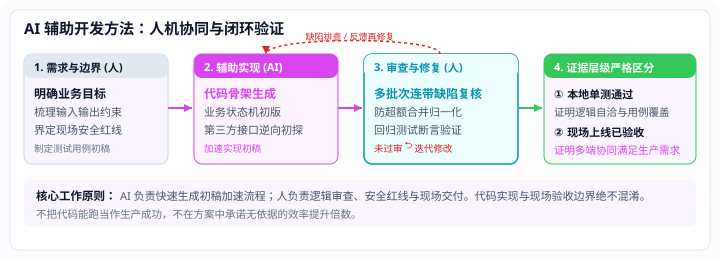

Methodology
让 AI 写得快，也让修改可检查
AI 能够大幅加速需求拆解、状态机骨架与测试初稿编写；但代码的业务合理性、极端边界防御与现场后果必须由人承担决策责任。

Responsibility & Loop
人机协同分工与缺陷审查小环路
严格划分工具能力与人工职责，建立测试驱动的审查闭环机制。
人：定义边界与最终裁决
需求范围、状态机与安全红线
- 输入约束定义：梳理客户口头需求，明确状态机的合法状态与不允许发生的跳变。
- 审查连带缺陷：例如在物料大小写归一化后，审查是否存在同批次回调未聚合超额入账的连带风险。
- 现场交付决策：决定是否回滚版本、何时切入备用路径，承担工程最终后果。
AI：加速初稿与自动化辅助
骨架生成与用例补齐
- 骨架快速实现：基于需求约束快速生成 TypeScript / Fastify 路由与状态机原型代码。
- 测试初稿扩充：根据接口规范快速补充正常分支与常见异常用例初稿。
- 迭代修复重构：接收人工审查指出的具体逻辑缺陷，在约束范围内快速完成局部重构。
Evidence Hierarchy
证据层级与验证边界
绝不将“代码已写完”或“本地测试通过”等同于“现场完成验收”。
证据层级 1
本地代码实现与编译
TypeScript 类型检查无报错，接口定义自洽。仅证明语法与接口契约成立。
证据层级 2
本地自动化回归测试
测试套件全通，边界用例断言成立。证明在预设模拟数据下算法逻辑自洽。
证据层级 3
现场上线与实际使用
现场各设备联调闭环并在生产环境运转。例如数字月台处于“已上线已验收”阶段。